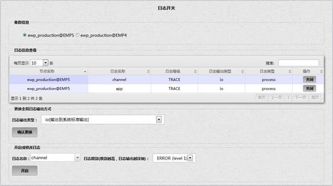
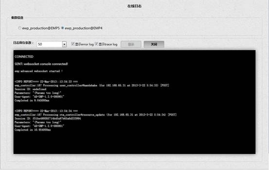

为了便于开发人员调试查看日志和对日志的管理，增加了日志管理模块，该模块包含日志开关和在线日志两部分。
日志开关模块可以查看 EWP 各节点上不同模块日志的等级，输出类型等信息，也可以对各模块日志进行动态开启，关闭，修改等级和更改输出类型。日志开关的功能仅针对 trace log 进行设置，对 report log（或者称为 error log）不起作用，界面如图所示：

集群信息区域，显示全部的 EWP 节点，包括 master 节点和 slave 节点，其中已经启用的节点前单选按钮可用，未启用的节点前单选按钮不可用。当仅有一个节点时默认选中该节点。切换不同的节点显示对应节点的日志信息，并可以对当前节点的日志进行开启，关闭，更改输出类型等操作。
日志信息查看区域显示当前节点的已开启的全部日志设置情况，日志类型暂时没用到，如图所示：
可以通过点击每一列的标题栏进行排序，也可以在搜索区域用任意关键字进行快速匹配日志信息。
当日志名称为 all 的记录开启时，代码中支持的全部日志都将以对应的输出类型（io 或 file）输出，当仅有日志名称为 channel 的记录开启时，代码中 channel 模块对应的日志将以对应的输出类型（io 或 file）输出。
对应代码中会区分不同的日志等级，当选择 INFO，ERROR，DEBUG，TRACE 时按照各自的级别在终端或文件中显示。
当日志输出类型为 io 时仅可以在终端显示 trace log，不产生文件，当日志输出类型为 file，会在 /usr/local/lib/ewp/log 目录下生成 trace_log_***.log 文件，在线日志界面仍能够看到 trace log 内容。
点击关闭按钮，对应日志模块按照所选日志等级的文件输出或 io 输出功能将被关闭。对应的记录在日志信息查看列表中消失。关闭日志输出后在在线日志界面将看不到对应日志模块的 trace log 内容。关闭日志输出后再次开启日志不会产生新的日志文件，日志将在原有文件上继续添加，因为目前没有支持整体关闭日志功能，否则系统需每次关闭时都判断是否有其他日志在开启。
在更改全局日志输出方式区域，切换不同日志输出类型，输出到系统标准输出即在终端进行 io 输出（在线日志界面可以查看），输出到文件即将 trace log 输出到指定目录，一般是 /usr/local/lib/ewp/log 目录下生成 trace_log_***.log 文件,切换输出类型后当前节点的全部已开启日志都更改成当前的输出类型。更改全局日志输出方式后，如果是file类型将会产生新的日志文件，界面如图所示:
在开启或修改日志区域，选择或输入日志名称，选择日志级别，点击开启按钮，如果当前日志已开启可以进行级别修改，如果当前日志未开启可以进行开启操作，界面如图所示：
如果某节点包含2种日志名称（包含的日志由是否在对应模块中添加对应的打印日志代码决定，日志名称也是开发人员自己定义的），比如是 app，channel，由于不同的节点可能会部署不同的 app，比如有的部署 app，有的部署 simulator，这会导致不同的节点可能对应有不同的日志名称。如果不清楚每个节点哪些模块支持日志打印，在开启日志时可以选择 all，若开启日志人员为对应代码的开发人员，清楚的记得所在日志名称，可以直接选择或输入对应日志名称进行开启。
一般将日志级别划分为四个等级，level1 ERROR，level2 INFO， level3 DEBUG， level4 TRACE，级别的划分也可以由开发人员自己定义并在代码中做出区分。
从集群信息列表中选择任意 EWP 节点，选择日志保存条数
（50,100,200,300,400,500,1000），勾选需要显示的日志类型（显示 report log，显示 trace log），点击显示按钮，在线日志开始进行连接，当有请求访问所选节点时，显示勾选的 report log 和 trace log 内容。reportlog 和 trace log 会根据是否勾选进行显示，但 trace log 还会受日志开关界面的设置影响，界面如图所示：

仅当某日志模块开启 io 输出类型才可以看到 trace log。
点击关闭按钮，日志断开连接。